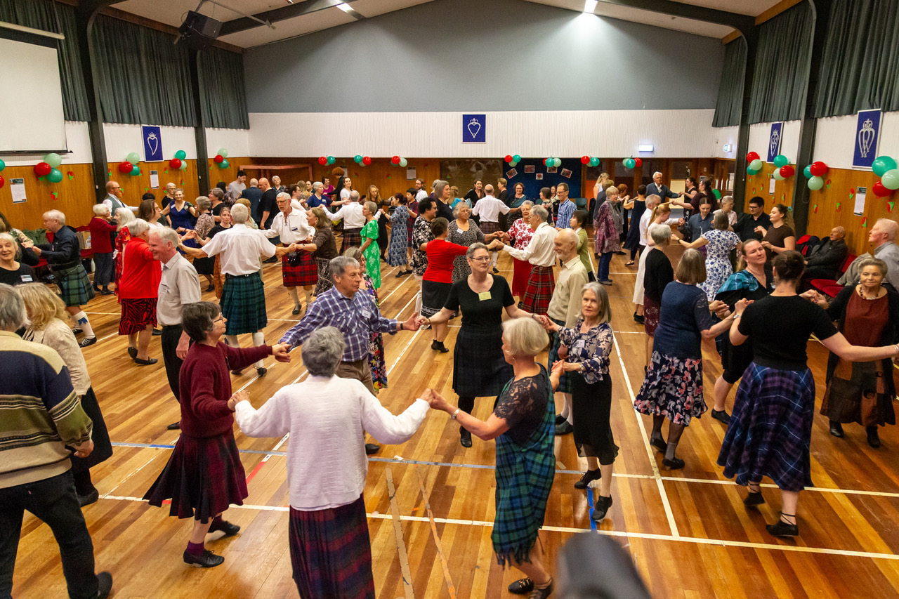

Tawa SCD Club News - 9 October 2025
Hello everyone
A bit of a "dreich" night, wasn't it? (Dreich is Scottish word for dreary, bleak, and wet weather). That may account for the fact we had just two 5C sets last night, but were very pleased to see Louis and Annette back. And Laura said that her friend Ken, who came along a couple of weeks ago, did enjoy his first foray into SCD and will come again next week. The two 'survivors' of our beginner classes, Ashley and Diane, are doing very well. Diane's husband Paul has a leg injury, but we're hopeful he will eventually make it back to dancing.
In her choice of tonight's dances, Catherine emphasised setting (or pas de Basque), and a formations involving corners, including one called "turn corner, partner, corner, partner".
- Starting on the right foot: R, L, R, pause; L, R, L, pause.
- Place R foot down; place L foot in front of the R foot (in 3rd position, T shape) and raise the R foot off the floor; shift your weight back onto the R foot again, and raise the L foot (pause); repeat, starting with the L foot.
For those who have mastered the rhythm, extend the non-weight-bearing leg out on the diagonal, with toes pointing down, during the pause. This is called the "jete".
Last night's dances
- Galloway House (R) - This was our walking warm-up dance. A 2C dance. https://my.strathspey.org/dd/dance/2389/
- St Andrew's Fair (J) - Devised by Roy Goldring, a prolific deviser with more than 240 dances to his name. This one is very popular. https://my.strathspey.org/dd/dance/5802/ . It was on the programme of last Saturday's New Dancers' Celebration.
- The March Hare (R) - Devised by Wellington teacher Iain Boyd. https://my.strathspey.org/dd/dance/4142/ . Beware, there are several dances with the same name. This dance introduces setting to corners.
- Cat's Whiskers (S) - This dance includes reels of three on the sides, in which the dancing couple start the reel in the middle of the three. The dance also includes "turn corner, partner, corner, partner". https://my.strathspey.org/dd/dance/10692/
- Reel of the 51st Division (R) - A very poplar dance, all over the SCD world. It was devised by POWs in camp in Germany during WW2. https://my.strathspey.org/dd/dance/5525/ Read the Extra Info on the link. The "Balance in line" in the dance is supposed to represent the saltire of the Scottish Flag. It is often performed at dances by a set of all men (as they would have danced it as POWs).
- The Zoologist (J) - We did this dance a couple of weeks ago. It includes half reels of four with 1st, then 2nd corners, and it finishes with a snake pass. https://my.strathspey.org/dd/dance/13590/
- Nethertown Nights (S) - This strathspey start with a 'modified' set and rotate (it has a full 4 hands round on bars 5-8), so the formation takes 12 bars. https://my.strathspey.org/dd/dance/19081/
Upcoming events
THIS Saturday 11 October, 1-4 pm -
Region Advanced/Fugues Day, St John's Church Hall, Johnsonville. Details on
Wellington Region website. Fugues are dances where one part of the set does one formation, while the other part does something else, and the pattern may be repeated, e.g.
Cranberry Tart, or
Farewell to Balfour Road. This link to
Notes on Fugues, by Hugh Foss, is an interesting, though quite technical, read. Other links are in the article by Region president Rod Downey in the latest
Harbour City Happenings. This should be a challenging afternoon's dancing for advanced dancers.
- Saturday 1 November, 1-5 pm - Meet Book 54 - A special Wellington Region Event. Khandallah Town Hall, Ganges Road, Khandallah. Diane Bradshaw will teach dances from the latest RSCDS Book. Details here.
- Tuesday 4 November, 7:30 pm - Wellington Region AGM, Community House, 6 Britannia St, Petone. Region President Rod Downey encourages all dancers - or at least some dancers from each club - to attend the AGM. An opportunity to have your say on what the Region offers to dancers.
- Monday 24 November, 7:30 pm - Johnsonville Club Tartan and Final Night. The programme was attached on 19 September
- Saturday 29 November, 7:30 pm - Carterton SCD Club 25th Anniversary Ball, Wairarapa Events Centre, Holloway Street, Carterton. Music will be provided by Jason Morris, Hilary Ferral, and Jonny Warnes. If you want to make it a weekend of it, you could join the Carterton Club in their St Andrews Day Brunch - see below.
- Sunday 30 November, 11 am - Saint Andrews Day Brunch / Lunch. Join Carterton Club members at Farriers Bar & Eatery, 4 Queen St, Masterton. Poster was attached last week. Note: Please RSVP by 22 November, to Elaine Laidlaw elaine@laidlaw.net.nz , as a group booking will be made.
- Wednesday 31 December, 8:00 pm - 1:30 am - Hogmanay 2025, Crofton Downs School, Chartwell. Hogmanay is the Scottish celebration of New Year's Eve. Programme was attached last week.
Tuesday afternoon dancing - 12:45 - 2:45pm, St John's Church Hall, Johnsonville.
14 October - Experienced group with Iain Boyd
21 October - General group with Catherine
28 October - experienced group with Iain Boyd
Last Saturday's New Dancers' Celebration
... was a great night's dancing. A wonderful turn-out, with 13 or 14 sets on the floor. Nineteen Tawa members were there, including our new dancers, Murray, Ashley and Diane, plus Mary and Duncan who were up on stage with their Saltire Band. Six of our Tawa members are also members of Linden Club (which was hosting the NDC this year), so they were hard at work lending a hand at the entry desk and supper arrangements, and no doubt setting up before, and packing up after the dance. Great work!
Here is a photo taken by Andrew Oliver (which I have "pinched" from the Linden newsletter - with Patricia's permission!). It shows how full the dance floor was!

That's all for now, folks! Have a lovely weekend.
Desiree
Desiree Patterson
tawa@dancesescottish.org.nz
Secretary, Tawa SCD Club
IMG_6122